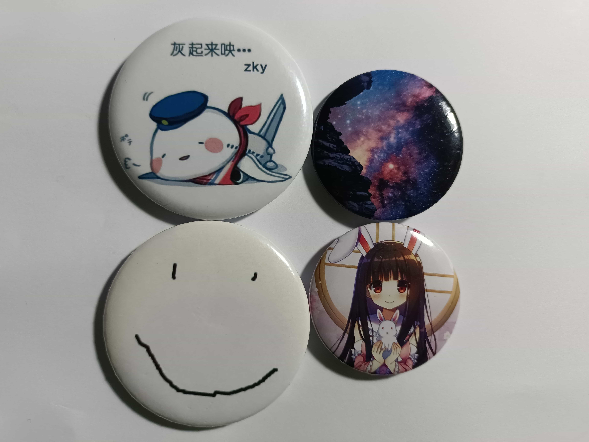
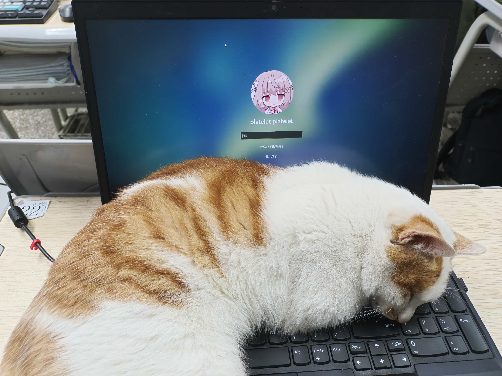
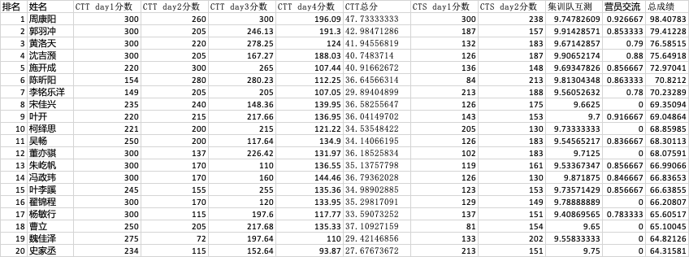

CTS / WC 2024 无憾退役记
我终于迎来了我 OI 生涯的最后一站–国家队选拔（CTS）。相比于 NOI，CTS 给我留下了更愉快的回忆。由于 CTS 安排在 WC 期间，所以我和大多数 WC 选手一样，参加了 WC 的所有活动。在 WC 期间，我有幸认识了许多其他集训队的同学，听了有趣的课程，并且还取得了让我高兴的成绩。
最终选拔出的四名国家队成员已经众所周知，值得一提的是我们寝室独占了半壁江山（这个台词的出处，懂的都懂）。
如果你对我的集训队论文感兴趣，请点击这里查看。相比 U 群传出的第一版，这里的版本更新了一些内容。
1-29 报到日
在我到达重庆育才之前，我在 qq 群里看到很多人抱怨：“如此条件，如何 NOI？”（原梗“如此成绩，如何招生？”）他们的不满点在于寝室内没有插座，每层楼只有过道上的 4 个插座，给电脑和手机充电带来了极大的不便。然而，当我到达后，却惊奇地发现空调插头是插在一个插座上的。这意味着我可以把自己带的插线板插上去，不过最后发现那个插座是圆孔的，白高兴了。
我的室友有成都七中的 zzh，还有学军的 zky 和 sjy。能认识闪闪发光的 zky 我还是挺高兴的，奇怪的是，我感觉现在的 zky 和 NOI 时的 zky 长相变化好大。
有一些人准备了徽章，我白嫖了几个。
晚上，最瘦的 zzh 居然会轻微地打呼噜。
1-30
xtq 的讲课《OI 在 TCS 中的应用》实在是跟不上，我听了两个小时就跑路了。
针对宿舍没有插座的问题，学校提出了一个解决方案：在一些教室内设置插线板，需要使用电脑的同学可以去这些教室自习。zky 和 sjy 大概在教室里做了一整天的题，我猜测其他去教室的同学也都是卷怪，所以我选择在宿舍里看《攻克特工队》，以免影响他人。
1-31
我对量子计算很感兴趣，因此在这次的 WC 课程中，量子计算是听得最舒服的。
晚上入睡的时候，我突然想到，CTS Day 1 会不会开挂发挥，以至于 CTS Day2 只要正常发挥都能进国家队？但我并不希望进入国家队，因为那样我不仅要被迫加训半年，还要承担众人的期望。然后我让自己平静下来了，告诉自己不必做太多的假设，“车到山前必有路”。
2-01 CTS Day 1 & WC
（背景）CTS Day 1 是 WC 的三道题去掉最简单的一道题，再加一道最难的题，而且 CTS 的部分分比 WC 还要少一些。
场上 1.5h 过了 T1，剩下的 3.5h 就在 T2 和 T3 之间反复横跳，最终两头落空。
得分 100 + 13 + 13 = 126，候选队 rank 12，虽然排名在前半部分，但这个分数实际上比平均分要低一些。
凭借着 CTT 四场考试奠定的优势，我的总排名保持在 rank 9。
晚上的民间文艺汇演真的很 amazing！有几个唱日语歌的同学，很喜欢川子和 Zeardoe 的唱的。
2-02
这天我第一次去教室自习，发现教室里摆怪实际比卷怪还多。我选择了一个桌面上贴有可莉贴纸的座位（我不玩原）。
校园里的猫猫非常亲人，我去洗手间回来后，发现我的电脑已经被一只猫猫霸占了。
2-03 CTS Day2
T1 就是通信题，开幕雷击！我想了一万年 T1 又调了一万年，AC T1 之后后就只剩下 2h 了，所以 T2 和 T3 就打算争取一下部分分了，由于时间本身不充裕，再加上时间分配不够理想，最终没有拿完会做的分。
得分 100 + 50 + 25 = 175，候选队 rank 10。原来 zky 没过 T1🤔，比我高的人基本也没过 T1。
总排名变成了 rank 8！这里放一个候选队前 20 的总榜。

2-04
上午去看了答辩，*** 向 zky 提问“我听说你们杭州学军中学在搞脱学而竞，你怎么看待？”。
下午就回成都了，因为第二天要参加崔老师的生日。